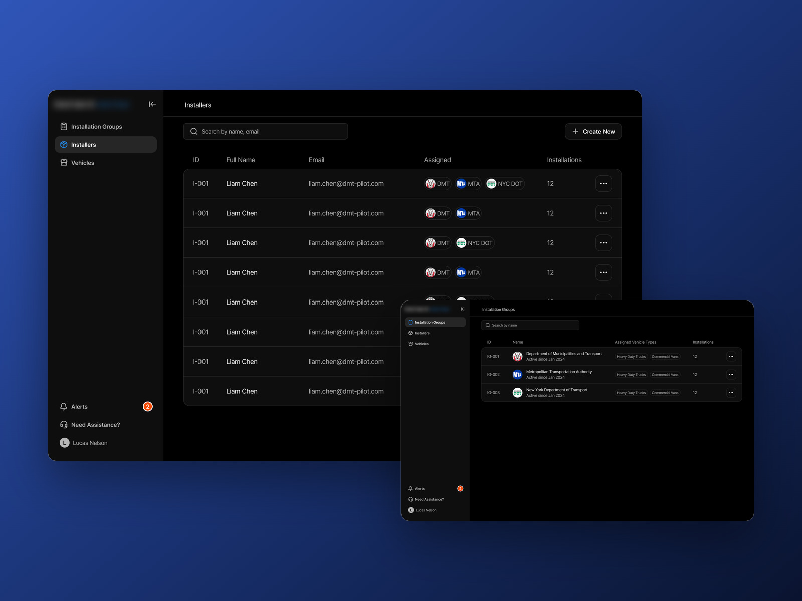
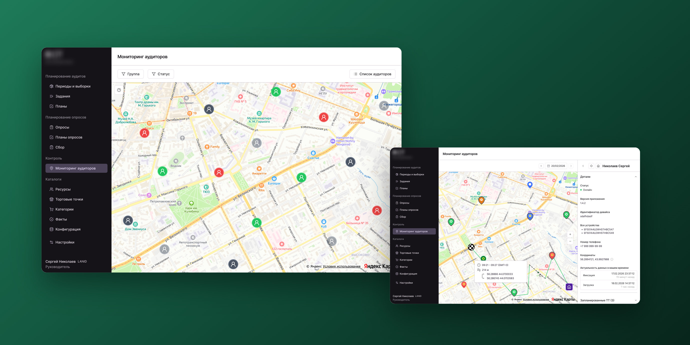
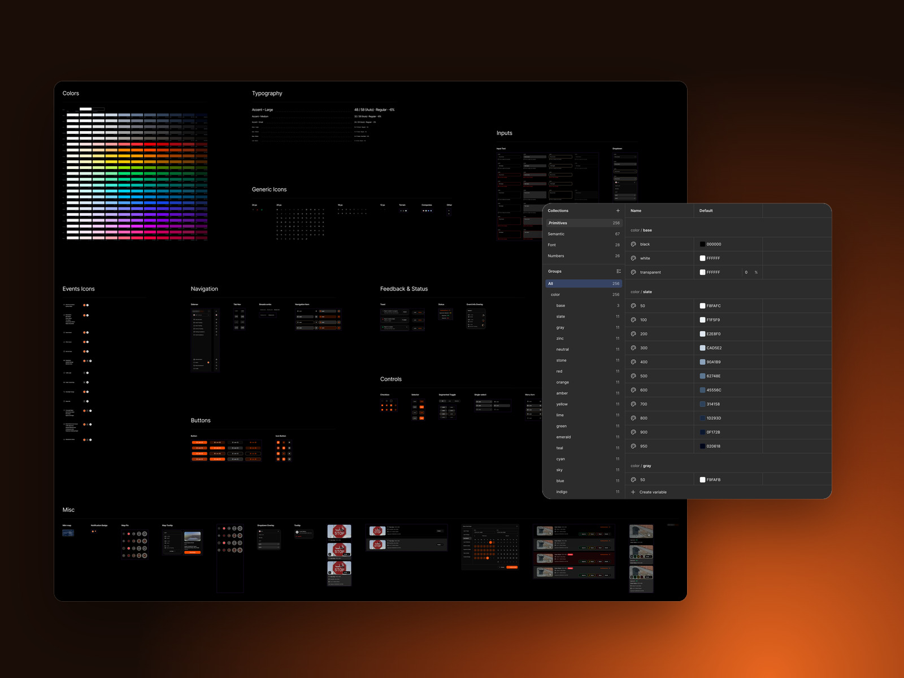
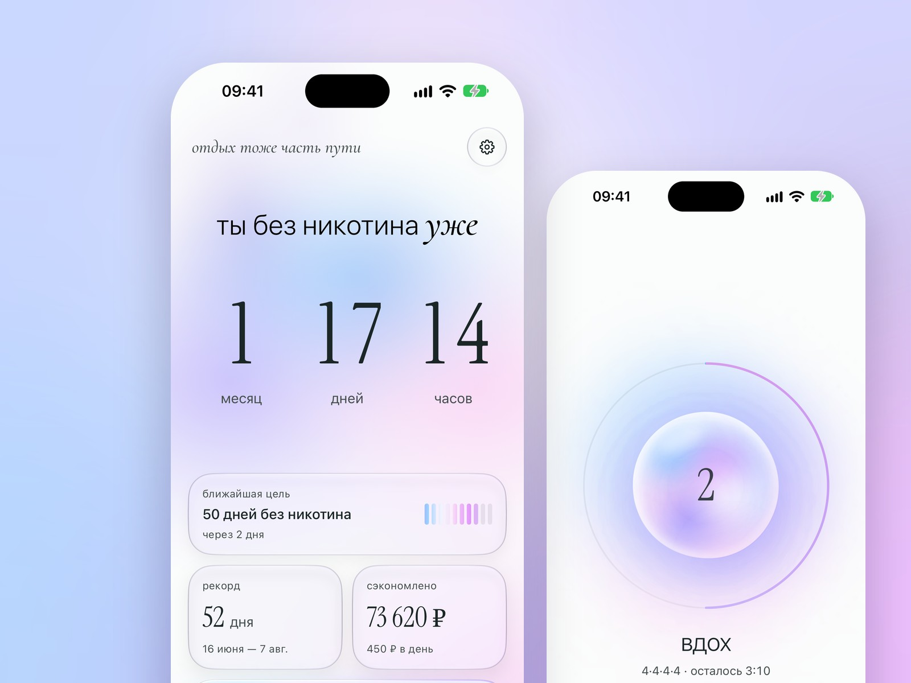

Панель инсталляций
Админ-панель установки оборудования: группы, установщики и транспорт в одном портале. В проде, им пользуются до сих пор.
Экосистема для полевого аудита розничных точек: мобильное приложение для аудиторов и веб-портал для менеджеров. У менеджера в подчинении десятки аудиторов, каждый день выполняющих задания по разным торговым точкам города.

С десятками аудиторов в подчинении это не масштабируется: работа менеджера превращается в непрерывный обзвон вместо контроля.
Фичу приняли, она в проде: веб-портал работает и на десктопе, и в мобильных браузерах. Задачи из ТЗ закрыты: менеджеры и заказчики отметили, что от звонков аудиторам, чтобы понять, где они и что делают, полностью ушли. Нужного человека стало быстрее находить, а за работой в поле — удобнее следить. В админке видно, где каждый аудитор и кто сейчас на линии, а менеджер открывает детали, историю статусов и маршруты.
Один маршрут менеджера: от общей карты до деталей точки.


Измерить эффект в цифрах: сколько времени уходит на поиск аудитора и сколько уточняющих обращений остаётся, до и после.

Админ-панель установки оборудования: группы, установщики и транспорт в одном портале. В проде, им пользуются до сих пор.

Дизайн-система продукта мониторинга дорожных аномалий: 50+ компонентов, 377 переменных. Используют до сих пор.

Личный проект от идеи до рабочего приложения: тихий счётчик без никотина, четыре виджета и «переждать тягу». Пока только на моём iPhone.